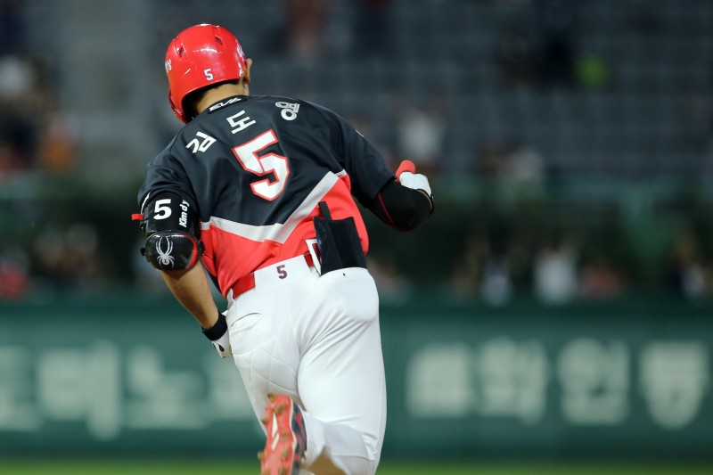

기아의 마지막 1차지명, 제2의 이종범이라는 평가답게 고교 야구에서 5툴 플레이어로 불렸다. 현재 KBO 리그에서 매우 우수한 타자 중 하나다.

김도영 나무위키
타격 면에서는 기본적으로 배드볼 히터로 히팅 포인트를 앞에 두고
적극적으로 상대 투수들의 공에 대처하는 스타일이다.
손목 힘과 허리 회전력이 뛰어나서 컨택 능력이 상당히 좋기에 안타 생산 능력이 좋으며
빠른 발을 이용한 장타도 곧잘 생산해 내는데 어느 한 코스로 치중되지 않고
다양한 코스로 공을 보낼 수 있는 스프레이 히터이기도 하다.
가장 큰 장점은 삼진을 당하지 않는다는 것인데 고교 3년 동안 235타석에 들어서면서 14삼진밖에 당하지 않았다. 바깥쪽 변화구를 허리를 빼서 밀어칠 수 있는 센스와 감각, 뛰어난 손목 활용, 미들 라인과 하이 라인 변화구 공략은 고교 톱 클래스로 평가받았으며 몸쪽 변화구도 장타로 쉽게 연결할 수 있다.
더불어 대처하기 까다로운 코스의 공은 파울로 커트해내는 재주가 뛰어나다. 고교 3년 동안 2홈런에 그쳐 파워 툴은 조금 떨어진다는 평가를 받았지만 대학팀 연습 경기 등에서 밀어서 홈런을 친 적도 있기에 프로에 와서 체계적인 훈련을 받으면 중장거리 타자까지 될 수 있다는 평가다. 다만 볼넷 역시 적은 편으로 기본적으로 당겨치는 성향이 강하다보니 낮은 존에는 약점을 지적받은 바 있다.